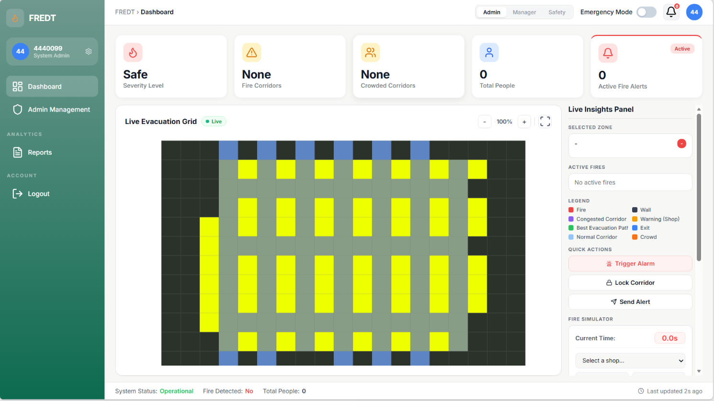

Projects combining AI, software engineering, data,
and real-world problem solving.

01
FREDT — AI-Powered Smart Evacuation System
An intelligent emergency-response platform for indoor fire
scenarios. It combines crowd monitoring, fire-risk prediction,
and risk-aware route optimization to support safer evacuation
decisions.
Comparative NLP project using DistilBERT, RoBERTa, and BERT
for sentiment classification on IMDb movie reviews, including
model evaluation, performance comparison, and an interactive
Streamlit application.
Machine learning project for CKD classification using Logistic
Regression and Naïve Bayes, with ROC/AUC evaluation, confusion
matrices, K-Means clustering, PCA visualization, and an
interactive prediction demo.
A cloud-based healthcare referral management prototype developed
on the Salesforce Platform to organize patient records, manage
referrals, track priority and status, and provide reports and
dashboard visualizations.
A blend of software, intelligent systems, data, and hands-on technical experience.مهارات تجمع بين تطوير البرمجيات والأنظمة الذكية والبيانات والخبرة التقنية العملية.
</>01
Software Developmentتطوير البرمجيات
Building web applications and practical systems, from interfaces to backend logic and database integration.تطوير تطبيقات الويب والأنظمة العملية، من الواجهات إلى منطق الخادم وربط قواعد البيانات.
AI02
AI & Machine Learningالذكاء الاصطناعي وتعلم الآلة
Applying machine learning, NLP and computer vision to prediction, classification and intelligent decision support.تطبيق تعلم الآلة ومعالجة اللغة والرؤية الحاسوبية للتنبؤ والتصنيف ودعم اتخاذ القرار.
DB03
Data & Databasesالبيانات وقواعد البيانات
Working with SQL databases, data preparation, analysis and model evaluation to turn information into insights.التعامل مع قواعد بيانات SQL وتجهيز البيانات وتحليلها وتقييم النماذج لاستخلاص نتائج مفيدة.
IT04
IT & Systemsتقنية المعلومات والأنظمة
Supporting users, troubleshooting technical issues, analyzing system requirements and documenting solutions.دعم المستخدمين وحل المشكلات التقنية وتحليل متطلبات الأنظمة وتوثيق الحلول.
BACKGROUND
Professional Journeyمسيرتي المهنية والأكاديمية
⌁
2022 – 2026
Bachelor of Computer Scienceبكالوريوس علوم الحاسب
Umm Al-Qura University · Makkahجامعة أم القرى · مكة المكرمة
GPA 3.58/4.00 · Second-Class Honorsالمعدل 3.58 من 4 · مرتبة الشرف الثانية
Computer ScienceHonors
▣
Mar – Jul 2025
IT Cooperative Training (COOP)التدريب التعاوني (COOP) — تقنية المعلومات
Hiraa General Hospital · Makkah, Saudi Arabiaمستشفى حراء العام · مكة المكرمة
Developed a healthcare referral management system and gained hands-on experience in IT support, troubleshooting, system testing, and documentation.تطوير نظام لإدارة الإحالات الطبية واكتساب خبرة عملية في الدعم التقني واستكشاف الأعطال واختبار الأنظمة وتوثيقها.
IT SupportPHP / MySQLSystems
✦
2025 – 2026
FREDT — AI-Powered Smart Evacuation
Graduation Project · Umm Al-Qura Universityمشروع التخرج · جامعة أم القرى
Developed an intelligent evacuation system combining fire-risk prediction, crowd monitoring, and risk-aware route optimization.تطوير نظام إخلاء ذكي يجمع بين التنبؤ بمخاطر الحرائق ومراقبة الازدحام وتحسين مسارات الإخلاء وفق مستوى الخطورة.
AI / MLPythonFlaskA* Pathfinding
CONTINUOUS LEARNING
Certificates
01
Introduction to Cybersecurity — Cisco
02
AI ERA NEON Bootcamp — Artificial Intelligence Path
03
Performance Management — BSF Academy
04
Financial Institutions and Markets for Beginners — BSF Academy
05
Business Etiquette and Efficiency — BSF Academy
LET'S CONNECT
Interested in working together?
I'm open to opportunities in AI, data, software,
and technology roles.